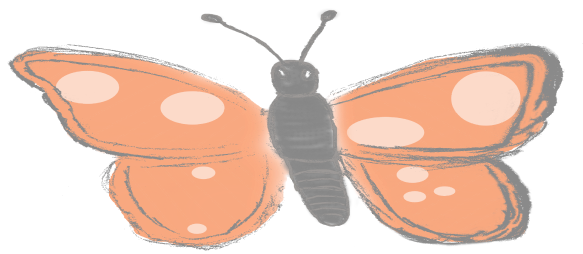

Twitter
Reddit

Github

Telegram

We take issue with the current state of NFTs. The myriad artwork in the space is extremely low effort and most
of it money grabs. The quality of artwork (and the technology) is a distant second to the quick money.
Infinite animation artwork is very different.
Most current NFTs are JPEGs - though this issue is present in all pre-rendered artwork. It is well known that these pictures can be copied - in perfect resolution - by copy/pasting the file/pixels/binary representation available either directly on the blockchain or made publicly available. This is no doubt an issue. But there is in fact an even bigger theoretical issue at play here. Even without a nefarious actor copy/pasting the source, viewers are unintentionally making a copy of the content with their eyes and in their memories. Anything able to be displayed on a screen and seen by a viewer is immediately copied by them. This mass copying dilutes the supply: undermining the scarcity of the artwork. In our next blog post in the Understanding Infinite Animation series, we will talk about scarcity in greater detail.
Outside the blockchain, there does in fact already exist artwork that can't be copied: Live Performances. Broardway shows, concerts, and live streams on Twitch are all examples of live performances which offer something larger than solely viewing of the artwork. Most fans will tell you that the high price paid for viewing these sorts of events is worth it for The Experience. They aren't paying extra money solely to view the art - they know they can do that from the comfort of their own living room for free if they wanted. Instead the belief is they get something extra by experiencing it live. They get something extra by being the first to view it, as it drops. This is the first aspect Infinite Animation offers.
Let's dive deeper into Twitch though. Simply, Twitch streamers create a following who enjoy watching and rewatching the - often similar/repetitive- content of a channel. But the slight nuances, the inside jokes, the real time updates that fans get by being devout followers provide a vastly increased experience for the viewer. In fact, viewers might feel "I don't want to miss this monday stream for fear I won't know the update-to-date information." It's this kind of fan attitude towards content creation that makes the realtime art generated by streamers so valuable. This is the second aspect Infinite Animation offers.
Let's state this plainly. The superbowl's live airing can not be copied before it happens and can not be reproduced after it ends.
Before it happens - it can't be copied - because it doesn't exist yet!
After it happens it is irrelevant to copy it because the live airing is the (only?) valuable aspect.
Commercials cost so much during the superbowl's live airing. But the cost of the commercial time during a replaying of the superbowl is almost worthless.Not that we've beat this idea to death let's talk about how Infinite Animation has these same elements.
Infinite Animation is a live show
Each piece of IA grows over time in ways unknown to all viewers: possibly in ways unknown to the artist themselves. With this setup artists are able to create storylines, events, or other changes to the artwork which will happen in the future. Only the owner of the artwork is privy to these changes. They are the first to view them AND they have the right to share or not share these updates. It is exactly this power that makes IA valuable. The last blog post in this series will talk more about determining the value of IA artwork.
The point is that IA continues to produce new content that owners, fans, and collectors have yet to see. Artists can continue to drive the imagination of these interested parties on each new viewing.
Protecting the Artwork
There is one person who has access to the algorithm used in the generation of the artwork - the artist themselves. And it is important to ensure that even the artist can not undermine the future of the artwork. First we ensure that incentives are aligned to discourage such behavior from the start. This is achieved by basic design.
The artist's name is on the line. To undermine past artwork would ruin their public image
The artist's royalty revenue is on the line. If they undermine their past artwork, they destroy their own revenue stream from resales
The artist's future revenue is on the line. If their past artwork has been ruined in some way, they won't be able to sell future pieces
While this is a good start and probably sufficient on its own, we have two extra security features in place.
By using future events and/or randomness in the artwork, even the artist doesn't know how the piece will develop. This significantly reduces or even removes their ability to affect the piece. This is a big benefit for the future of the piece and therefore we encourage artists to promote the usage of such designs when explaining a piece. We will help the community grow to identify and understand these aspects as desirable features in a piece of artwork.
MIMICRY will vet pieces - not for quality - but for uniqueness: ensuring that artists are not self cannibalizing their own algorithms and ideas. These pieces will also be evaluated for uniqueness against vetted artwork by other artists and in the community overall. Vetted pieces will be given some distinction like a Twitter check mark. Artists are welcome to release as many pieces as they want but vetting a piece will ensure it's individual at least at the moment of release. This will be a service add-on offered by MIMICRY that will likely be free at first but might be a charged for service later as it requires real human power to evaluate a piece.
Technical Discussion on Protecting the Algorithm
The rest of this blog post will be a fairly technical/theoretical discussion on protecting a piece's algorithm. The short answer is that MIMICRY is also methodical about this endeavour. But the interested reader should read on to find out more.
JPEGs are copyable because they are fixed information. In the same way, it can be argued that an algorithm is fixed information. This is one derivative higher. An attacker can copy not the artwork; but instead, copy the algorithm that makes the artwork.
However, this is much more difficult than it sounds.
A viewer of a piece never has access to the algorithm.
When you view a JPEG you immediately get access to everything that makes it interesting - the visual. However, when you view artwork made by an algorithm you likely never have access to the source code which made that image. And as a viewer you don't even care to. This is a very important distinction. A viewer can still enjoy the artwork without ever having access to the crucial generating information. And this setup is easily reproducible online. When IA is displayed online, only a picture of the product (a stream of the image) is displayed, not the algorithm. Displaying the artwork is always safe!
Owners of a piece have access but only to compiled code.
While an owner has access to the algorithm, the algorithm is compiled code. It is theoretically possible to uncompile code, but there are three major protections against this.
First, uncompelling code is significantly beyond the abilities of 99% of people, and beyond the abilities of 99% of coders. So the only way a knowledgeable attacker ends up with a piece is by buying it, attacking it, selling it and finally releasing the code. There is no financial gain to do this (without a short market) and this process is difficult.
Second, each individual piece has its own unique compiled code. MIMICRY takes this aspect seriously and therefore it is a major selling point of the MIMICRY platform to ensure that each individual compilation process will be fairly unique and difficult. On each piece, an attacker will have to start from zero when trying to uncompile. Uncompiling the code is a matter MIMICRY sees like Microsoft sees attackers uncompelling Microsoft Office. There will be constant effort by the MIMICRY company to ensure compiled code is protected
Third and most importantly, uncompiled code does not ruin the artwork. It does undermine certain elements, but it does not destroy the piece. Even if the code is uncompiled, the only possible attack vector of this is that the future is known. But this doesn't mean that the attacker owns anything. The future still belongs to the NFT holder and therefore still has value. Additionally, a major design of good IA is to use future events/data not yet known. Therefore, even should the code be uncompiled, the future is protected as it relies on outside events not yet known.
So we acknowledge the attack vector and are sure it will happen at some point in the future. But with all the disincentives in place and the overall limited downside it does not in any way undermine Infinite Animation design or value.
Infinite Animation represents a critical moment in the understanding of Soft Assets. Going forward, prospective owners of soft assets will require strong guarantees on why an "asset" is uncopyable. Only when the community began to understand why Bitcoin was uncopyable was the value solidified. With all other soft assets we must ask the same questions.
Read the other articles in this Understanding Infinite Animation series to learn more about the crucial design elements that make this innovation possible.
Most current NFTs are JPEGs - though this issue is present in all pre-rendered artwork. It is well known that these pictures can be copied - in perfect resolution - by copy/pasting the file/pixels/binary representation available either directly on the blockchain or made publicly available. This is no doubt an issue. But there is in fact an even bigger theoretical issue at play here. Even without a nefarious actor copy/pasting the source, viewers are unintentionally making a copy of the content with their eyes and in their memories. Anything able to be displayed on a screen and seen by a viewer is immediately copied by them. This mass copying dilutes the supply: undermining the scarcity of the artwork. In our next blog post in the Understanding Infinite Animation series, we will talk about scarcity in greater detail.
Outside the blockchain, there does in fact already exist artwork that can't be copied: Live Performances. Broardway shows, concerts, and live streams on Twitch are all examples of live performances which offer something larger than solely viewing of the artwork. Most fans will tell you that the high price paid for viewing these sorts of events is worth it for The Experience. They aren't paying extra money solely to view the art - they know they can do that from the comfort of their own living room for free if they wanted. Instead the belief is they get something extra by experiencing it live. They get something extra by being the first to view it, as it drops. This is the first aspect Infinite Animation offers.
Let's dive deeper into Twitch though. Simply, Twitch streamers create a following who enjoy watching and rewatching the - often similar/repetitive- content of a channel. But the slight nuances, the inside jokes, the real time updates that fans get by being devout followers provide a vastly increased experience for the viewer. In fact, viewers might feel "I don't want to miss this monday stream for fear I won't know the update-to-date information." It's this kind of fan attitude towards content creation that makes the realtime art generated by streamers so valuable. This is the second aspect Infinite Animation offers.
Let's state this plainly. The superbowl's live airing can not be copied before it happens and can not be reproduced after it ends.
Before it happens - it can't be copied - because it doesn't exist yet!
After it happens it is irrelevant to copy it because the live airing is the (only?) valuable aspect.
Commercials cost so much during the superbowl's live airing. But the cost of the commercial time during a replaying of the superbowl is almost worthless.Not that we've beat this idea to death let's talk about how Infinite Animation has these same elements.
Infinite Animation is a live show
Each piece of IA grows over time in ways unknown to all viewers: possibly in ways unknown to the artist themselves. With this setup artists are able to create storylines, events, or other changes to the artwork which will happen in the future. Only the owner of the artwork is privy to these changes. They are the first to view them AND they have the right to share or not share these updates. It is exactly this power that makes IA valuable. The last blog post in this series will talk more about determining the value of IA artwork.
The point is that IA continues to produce new content that owners, fans, and collectors have yet to see. Artists can continue to drive the imagination of these interested parties on each new viewing.
Protecting the Artwork
There is one person who has access to the algorithm used in the generation of the artwork - the artist themselves. And it is important to ensure that even the artist can not undermine the future of the artwork. First we ensure that incentives are aligned to discourage such behavior from the start. This is achieved by basic design.
The artist's name is on the line. To undermine past artwork would ruin their public image
The artist's royalty revenue is on the line. If they undermine their past artwork, they destroy their own revenue stream from resales
The artist's future revenue is on the line. If their past artwork has been ruined in some way, they won't be able to sell future pieces
While this is a good start and probably sufficient on its own, we have two extra security features in place.
By using future events and/or randomness in the artwork, even the artist doesn't know how the piece will develop. This significantly reduces or even removes their ability to affect the piece. This is a big benefit for the future of the piece and therefore we encourage artists to promote the usage of such designs when explaining a piece. We will help the community grow to identify and understand these aspects as desirable features in a piece of artwork.
MIMICRY will vet pieces - not for quality - but for uniqueness: ensuring that artists are not self cannibalizing their own algorithms and ideas. These pieces will also be evaluated for uniqueness against vetted artwork by other artists and in the community overall. Vetted pieces will be given some distinction like a Twitter check mark. Artists are welcome to release as many pieces as they want but vetting a piece will ensure it's individual at least at the moment of release. This will be a service add-on offered by MIMICRY that will likely be free at first but might be a charged for service later as it requires real human power to evaluate a piece.
Technical Discussion on Protecting the Algorithm
The rest of this blog post will be a fairly technical/theoretical discussion on protecting a piece's algorithm. The short answer is that MIMICRY is also methodical about this endeavour. But the interested reader should read on to find out more.
JPEGs are copyable because they are fixed information. In the same way, it can be argued that an algorithm is fixed information. This is one derivative higher. An attacker can copy not the artwork; but instead, copy the algorithm that makes the artwork.
However, this is much more difficult than it sounds.
A viewer of a piece never has access to the algorithm.
When you view a JPEG you immediately get access to everything that makes it interesting - the visual. However, when you view artwork made by an algorithm you likely never have access to the source code which made that image. And as a viewer you don't even care to. This is a very important distinction. A viewer can still enjoy the artwork without ever having access to the crucial generating information. And this setup is easily reproducible online. When IA is displayed online, only a picture of the product (a stream of the image) is displayed, not the algorithm. Displaying the artwork is always safe!
Owners of a piece have access but only to compiled code.
While an owner has access to the algorithm, the algorithm is compiled code. It is theoretically possible to uncompile code, but there are three major protections against this.
First, uncompelling code is significantly beyond the abilities of 99% of people, and beyond the abilities of 99% of coders. So the only way a knowledgeable attacker ends up with a piece is by buying it, attacking it, selling it and finally releasing the code. There is no financial gain to do this (without a short market) and this process is difficult.
Second, each individual piece has its own unique compiled code. MIMICRY takes this aspect seriously and therefore it is a major selling point of the MIMICRY platform to ensure that each individual compilation process will be fairly unique and difficult. On each piece, an attacker will have to start from zero when trying to uncompile. Uncompiling the code is a matter MIMICRY sees like Microsoft sees attackers uncompelling Microsoft Office. There will be constant effort by the MIMICRY company to ensure compiled code is protected
Third and most importantly, uncompiled code does not ruin the artwork. It does undermine certain elements, but it does not destroy the piece. Even if the code is uncompiled, the only possible attack vector of this is that the future is known. But this doesn't mean that the attacker owns anything. The future still belongs to the NFT holder and therefore still has value. Additionally, a major design of good IA is to use future events/data not yet known. Therefore, even should the code be uncompiled, the future is protected as it relies on outside events not yet known.
So we acknowledge the attack vector and are sure it will happen at some point in the future. But with all the disincentives in place and the overall limited downside it does not in any way undermine Infinite Animation design or value.
Infinite Animation represents a critical moment in the understanding of Soft Assets. Going forward, prospective owners of soft assets will require strong guarantees on why an "asset" is uncopyable. Only when the community began to understand why Bitcoin was uncopyable was the value solidified. With all other soft assets we must ask the same questions.
Read the other articles in this Understanding Infinite Animation series to learn more about the crucial design elements that make this innovation possible.
BLOG PHOTO
Steven Parad
2022.07.07
2022.07.07
Understanding Infinite Animation: Uncopyable
